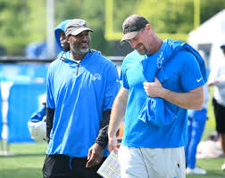

The Detroit Lions historically were one of the worst teams in the nfl with an overall record of 570-694-34. They couldn't seem to get going. And the worst part is now other teams fanbasese are feeling bad for Lions fans. Hear's why I think they might be able to break the cycle.
The owner steped down and handed the keys to the team to her daughter. The first thing she did was hiring head scout as GM. Some people were mad because the guy that she hired hasn't done any GM work before. She also hired a former player from the Lions from 2006 to 2008 by the name of Dan Campbell to be their Head coach. This hiring was really unexpeted because he wasn't a popualar coach.
Then the Head Coach decided to make the entire coaching staff of former NFL players
former players that are now Lions coaches
Coach Dan Campbell said in his introductory press confrence
"We're gonna kick you in the teeth, and when you punch us back we're gonna smile at you, and when you knock us down we're going to get up, and on the way, we're going to bite a kneecap off And we’re going to get up and then it’s going to take three shots to get us down. And when we do, we’re gonna take another hunk out of you. Before long, we’re going to be the last one standing. That’s going to be the mentality.”there were a lot of mixed reactions, on one side they thought he was a complete physcopath and on the other side they absolutely loved him. His stratigy was to get players that needed to prove themselves that their still good.